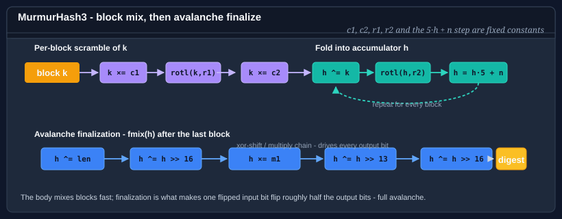

Using MurmurHash3
MurmurHash3 is a non-cryptographic hash family designed by Austin Appleby (2011) and distributed in the SMHasher reference repository. It produces excellent avalanche behavior - every input bit influences every output bit - and passes all of the standard non-cryptographic hash quality tests. It is widely used in databases, distributed systems, and probabilistic data structures (Bloom filters, HyperLogLog).

Bodu.IO.Hashing provides two variants:
| Type | Output | Optimized for | Notes |
|---|---|---|---|
MurmurHash3_32 |
32 bits | All platforms | General-purpose 32-bit fingerprint. |
MurmurHash3_128 |
128 bits | 64-bit platforms | 128-bit fingerprint; the highest-quality variant. |
Both derive from NonCryptographicHashAlgorithm via a shared MurmurHash3 base. Both buffer their input internally, consistent with MurmurHash3's one-shot design.
Not cryptographic. MurmurHash3 must not be used for password hashing, digital signatures, or any application that requires adversarial collision resistance. An attacker who can choose inputs can construct collisions. For adversary-facing use, reach for SipHash64.
Pattern 1 - compute a 32-bit digest
using System.Text;
using Bodu.IO.Hashing;
byte[] data = Encoding.UTF8.GetBytes("the quick brown fox");
using var murmur = new MurmurHash3_32();
murmur.Append(data);
byte[] digest = murmur.GetCurrentHash(); // 4 bytes
uint h = BitConverter.ToUInt32(digest);
Pattern 2 - compute a 128-bit digest
using System.Text;
using Bodu.IO.Hashing;
byte[] data = Encoding.UTF8.GetBytes("the quick brown fox");
using var murmur = new MurmurHash3_128();
murmur.Append(data);
byte[] digest = murmur.GetCurrentHash(); // 16 bytes
Use the 128-bit variant when you need a wider fingerprint space - for example, as a Bloom filter hash or as a deduplication key over a large corpus.
Pattern 3 - seeded hash for independent lanes
Both variants accept a seed at construction time. Two instances with different seeds produce independent hash functions over the same input, which is useful for Bloom filters (which need multiple independent hashes) and for A/B routing.
using Bodu.IO.Hashing;
// Two independent 32-bit hash functions over the same data.
using var h1 = new MurmurHash3_32(seed: 0x00000001u);
using var h2 = new MurmurHash3_32(seed: 0x00000002u);
h1.Append(data);
h2.Append(data);
uint slot1 = BitConverter.ToUInt32(h1.GetCurrentHash()) % (uint)buckets;
uint slot2 = BitConverter.ToUInt32(h2.GetCurrentHash()) % (uint)buckets;
The seed is not a cryptographic key - it does not provide adversarial resistance.
Pattern 4 - Append / GetCurrentHash / Reset lifecycle
MurmurHash3 is a one-shot algorithm internally. The Append calls accumulate bytes in an internal buffer; GetCurrentHash applies the full mixing pass once all data is available. The call is non-destructive - the buffer is preserved so you can continue appending after a snapshot.
using Bodu.IO.Hashing;
using var murmur = new MurmurHash3_32();
murmur.Append(header);
murmur.Append(body);
byte[] partial = murmur.GetCurrentHash(); // snapshot - mixes all bytes appended so far
murmur.Append(trailer);
byte[] full = murmur.GetCurrentHash();
murmur.Reset(); // discards the buffer and resets to seed
Note
The internal buffer grows with each Append. For very large inputs (hundreds of MB) where you do not want to hold the entire payload in memory, prefer a constant-memory streaming algorithm such as Fnv1a64, Crc, or Fletcher32.
Pattern 5 - Bloom filter with two hash functions
using System.Text;
using Bodu.IO.Hashing;
const int M = 1_000_000; // bit-array size
bool[] bits = new bool[M];
void Insert(string item)
{
byte[] key = Encoding.UTF8.GetBytes(item);
using var h1 = new MurmurHash3_32(seed: 1);
using var h2 = new MurmurHash3_32(seed: 2);
h1.Append(key);
h2.Append(key);
int slot1 = (int)(BitConverter.ToUInt32(h1.GetCurrentHash()) % (uint)M);
int slot2 = (int)(BitConverter.ToUInt32(h2.GetCurrentHash()) % (uint)M);
bits[slot1] = true;
bits[slot2] = true;
}
bool MightContain(string item)
{
byte[] key = Encoding.UTF8.GetBytes(item);
using var h1 = new MurmurHash3_32(seed: 1);
using var h2 = new MurmurHash3_32(seed: 2);
h1.Append(key);
h2.Append(key);
int slot1 = (int)(BitConverter.ToUInt32(h1.GetCurrentHash()) % (uint)M);
int slot2 = (int)(BitConverter.ToUInt32(h2.GetCurrentHash()) % (uint)M);
return bits[slot1] && bits[slot2];
}
MurmurHash3 vs the other fingerprints
| Criterion | MurmurHash3 | FNV-1a | CityHash | BCL xxHash |
|---|---|---|---|---|
| Output widths | 32 · 128-bit | 32 · 64-bit | 32 · 64 · 128-bit | 32 · 64 · 128-bit |
| Seed support | Yes | No (fixed offset basis) | No | Limited (BCL contract) |
| Streaming (constant memory) | No - buffers input | Yes | No - buffers input | No - buffers input |
| Relative throughput (large inputs) | Good | Moderate | Excellent | Excellent |
| Distribution quality | Excellent | Good | Excellent | Excellent |
Reach for MurmurHash3 when you need a seeded 32- or 128-bit fingerprint with high-quality avalanche - for Bloom filters, consistent hashing, and bucketing. For the fastest throughput on large buffers, prefer CityHash (in Bodu) or System.IO.Hashing.XxHash64 (in the BCL). For constant-memory streaming, prefer FNV-1a or CRC.
Where to go next
- Using CityHash - fastest throughput on large inputs.
- Using FNV - constant-memory streaming alternative.
- Using Pearson - configurable output width from 8 to 2048 bits.
- Bodu.IO.Hashing introduction - when to use a fingerprint vs a checksum vs a check digit.
- Bodu.IO.Hashing namespace page - key types and design notes.
- Hashing & Cryptography guides - every guide in this topic, across Bodu.IO.Hashing and Bodu.Security.Cryptography.